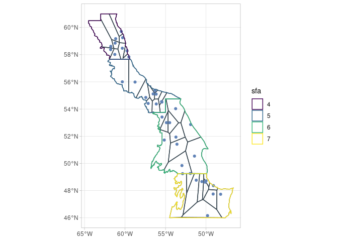

The goal of sspm is to implement a gam-based spatial surplus production model, aimed at modeling northern shrimp population in Canada but potentially to any stock in any location. The package is opinionated in its implementation of SPMs as it internally makes the choice to use penalized spatial gams with time lags based on Pedersen et al. (2020). However, it also aims to provide options for the user to customize their model.
Installation
You can install the development version from GitHub with:
# install.packages("devtools")
devtools::install_github("pedersen-fisheries-lab/sspm")Example
The following example shows the typical sspm workflow. The API is subject to changes as the package is still in development.
Let’s first load the packages and the test data.
library(sspm)
#> Loading required package: sf
#> Linking to GEOS 3.9.0, GDAL 3.2.2, PROJ 7.2.1
#> Loading required package: mgcv
#> Loading required package: nlme
#> This is mgcv 1.8-36. For overview type 'help("mgcv-package")'.
library(mgcv)
borealis <- sspm:::borealis_simulated
predator <- sspm:::predator_simulated
catch <- sspm:::catch_simulated
sfa_boundaries <- sspm:::sfa_boundaries- The first step of the
sspmworkflow is to create asspm_boundaryfrom ansfobject, providing theboundary_columnthat delineates the boundary regions. The object can then be plotted withspm_plot(as can mostsspmobjects).
bounds <- spm_as_boundary(boundaries = sfa_boundaries,
boundary_column = "sfa")
spm_plot(bounds)
- The second step consists in wrapping a
data.frame,tibbleorsfobject into asspm_dataobject, with a few other pieces of relevant information, such as the name, dataset type (biomass, predictor or catch, depending on the type of information contained), time column and coordinates column (i notsf) and unique row identifier. Here we wrap the borealis dataset that contains the biomass information.
biomass_dataset <-
spm_as_dataset(borealis, name = "borealis",
type = "biomass", time_column = "year_f",
coords = c('lon_dec','lat_dec'), uniqueID = "uniqueID")
#> ℹ Casting data matrix into simple feature collection using columns: lon_dec, lat_dec
#> ! Warning: sspm is assuming WGS 84 CRS is to be used for casting
biomass_dataset
#>
#> ‒‒ SSPM Dataset: borealis (biomass) ‒‒
#> → Data : [1541 observations, 18 variables]
#> → Data unique ID : uniqueID
#> → Time col. : year_f
#> → Coordinates cols. : lon_dec, lat_dec- We do the same with the predator data, which are of the predictor type.
predator_dataset <-
spm_as_dataset(predator, name = "all_predators",
type = "predictor", time_column = "year",
uniqueID = "uniqueID", coords = c("lon_dec", "lat_dec"))
#> ℹ Casting data matrix into simple feature collection using columns: lon_dec, lat_dec
#> ! Warning: sspm is assuming WGS 84 CRS is to be used for casting
predator_dataset
#>
#> ‒‒ SSPM Dataset: all_predators (predictor) ‒‒
#> → Data : [4833 observations, 15 variables]
#> → Data unique ID : uniqueID
#> → Time col. : year
#> → Coordinates cols. : lon_dec, lat_dec- The
sspmworkflow relies on the discretization of the boundary objects, the default method being voronoi tesselation (only one method available currently, but see in the future see?spm_methods()for the list of methods available).
bounds_voronoi <- bounds %>%
spm_discretize(method = "tesselate_voronoi",
with = biomass_dataset,
nb_samples = 10)
#> ℹ Discretizing using method tesselate_voronoi
bounds_voronoi
#>
#> ‒‒ SSPM Boundary (Discrete) ‒‒
#> → Boundaries : [4 observations, 3 variables]
#> → Boundary col. : sfa
#> → Surface col. : area
#> → Discretized :
#> ٭ Points — [40 features, 20 variables]
#> ٭ Patches — [38 features, 4 variables]- Plotting the object shows the polygons that have been created.
spm_plot(bounds_voronoi)
- The results of the discretization can also be explored with
spm_patches()andspm_points().
spm_patches(bounds_voronoi)
#> Simple feature collection with 38 features and 3 fields
#> Geometry type: GEOMETRY
#> Dimension: XY
#> Bounding box: xmin: -64.5 ymin: 46.00004 xmax: -46.6269 ymax: 61
#> Geodetic CRS: WGS 84
#> # A tibble: 38 x 4
#> sfa patch_id geometry area
#> * <chr> <fct> <POLYGON [°]> [km^2]
#> 1 4 V1 ((-64.42169 60.27125, -64.42 60.27206, -64.41666 60.… 20367.3…
#> 2 4 V2 ((-59.95566 58.64882, -60.25261 57.73692, -59.67678 … 1718.5…
#> 3 4 V3 ((-61.89804 57.6918, -61.34602 58.43681, -61.36857 5… 3882.6…
#> 4 4 V4 ((-60.50931 57.66667, -60.87958 58.41518, -61.34602 … 4684.4…
#> 5 4 V5 ((-61.34602 58.43681, -60.87958 58.41518, -60.68359 … 2687.3…
#> 6 4 V6 ((-63 60.62184, -61.66155 59.11637, -60.6936 58.9027… 14504.2…
#> 7 4 V7 ((-60.26194 59.52858, -60.73068 59.34113, -60.6936 5… 2449.3…
#> 8 4 V8 ((-59.91649 58.83888, -60.68359 58.8793, -60.87958 5… 6258.8…
#> 9 4 V9 ((-61.96379 61, -60.73068 59.34113, -60.26194 59.528… 5308.1…
#> 10 5 V10 ((-59.55703 55.21506, -59.53354 57.66667, -59.56667 … 27939.6…
#> # … with 28 more rows
spm_points(bounds_voronoi)
#> Simple feature collection with 40 features and 19 fields
#> Geometry type: POINT
#> Dimension: XY
#> Bounding box: xmin: -61.77175 ymin: 46.16256 xmax: -48.20016 ymax: 59.70288
#> Geodetic CRS: WGS 84
#> # A tibble: 40 x 20
#> # Groups: sfa [4]
#> year vessel trip div_nafo season area_swept_km2 year_f n_samples lon_dec
#> * <dbl> <dbl> <dbl> <chr> <chr> <dbl> <fct> <dbl> <dbl>
#> 1 1995 39 23 2J Fall 0.0250 1995 5 -51.9
#> 2 1996 39 37 2G Fall 0.0250 1996 5 -61.8
#> 3 2011 39 95 2J Fall 0.0250 2011 5 -49.1
#> 4 2011 39 97 2J Fall 0.0187 2011 5 -53.7
#> 5 2011 39 98 3K Fall 0.0281 2011 5 -61.2
#> 6 2006 48 101 2G Summer 0.0187 2006 5 -57.1
#> 7 2009 48 104 2G Summer 0.0156 2009 5 -61.3
#> 8 2012 39 107 2H Fall 0.0187 2012 5 -56.3
#> 9 2012 39 109 3K Fall 0.0218 2012 5 -50.0
#> 10 2014 63 109 2G Summer 0.0281 2014 5 -55.4
#> # … with 30 more rows, and 11 more variables: lat_dec <dbl>, depth <dbl>,
#> # temp_at_bottom <dbl>, weight <dbl>, weight_per_km2 <dbl>,
#> # recruit_weight <dbl>, row <int>, uniqueID <chr>, geometry <POINT [°]>,
#> # sfa <chr>, area [km^2]- The next step in this workflow is to smooth the variables to be used in the final
sspmmodel, by using spatial-temporal smoothers, by passing each dataset throughspm_smooth. Here we first smoothweight_per_km2as well astemp_at_bottom. Note that the boundary columnsfacan be used in the formula as the data will be first joined to the provided boundaries.
biomass_smooth <- biomass_dataset %>%
spm_smooth(weight_per_km2 ~ sfa + smooth_time(k = 3) + smooth_space(),
boundaries = bounds_voronoi,
drop.unused.levels = F, family=tw, method= "fREML") %>%
spm_smooth(temp_at_bottom ~ smooth_time(k = 2) + smooth_space(),
drop.unused.levels = F, family=gaussian, method= "fREML")
#> ℹ Fitting formula: weight_per_km2 ~ sfa + smooth_time(k = 3) + smooth_space() for dataset 'borealis'
#> ℹ Fitting formula: temp_at_bottom ~ smooth_time(k = 2) + smooth_space() for dataset 'borealis'
biomass_smooth
#>
#> ‒‒ SSPM Dataset: borealis (biomass) ‒‒
#> → Data (MAPPED) : [1025 observations, 21 variables]
#> → Data unique ID : uniqueID
#> → Time col. : year_f
#> → Coordinates cols. : lon_dec, lat_dec
#> → Formulas :
#> – weight_per_km2 ~ sfa + smooth_time(k = 3) + smooth_space()
#> – temp_at_bottom ~ smooth_time(k = 2) + smooth_space()
#> → Boundaries : [4 observations, 3 variables]
#> → Smoothed Data : [912 observations, 8 variables]
#> ٭ smoothed vars: temp_at_bottom_smooth — weight_per_km2_smooth- The smoothed results for any smoothed variables (listed in “smoothed vars” above) can be easily plotted:
spm_plot(biomass_smooth, "weight_per_km2_smooth")
- We also smooth the
weight_per_km2variable in the predator data.
predator_smooth <- predator_dataset %>%
spm_smooth(weight_per_km2 ~ smooth_time(k = 3) + smooth_space(),
boundaries = bounds_voronoi,
drop.unused.levels = F, family=tw, method= "fREML")
#> ℹ Fitting formula: weight_per_km2 ~ smooth_time(k = 3) + smooth_space() for dataset 'all_predators'
predator_smooth
#>
#> ‒‒ SSPM Dataset: all_predators (predictor) ‒‒
#> → Data (MAPPED) : [1964 observations, 18 variables]
#> → Data unique ID : uniqueID
#> → Time col. : year
#> → Coordinates cols. : lon_dec, lat_dec
#> → Formulas :
#> – weight_per_km2 ~ smooth_time(k = 3) + smooth_space()
#> → Boundaries : [4 observations, 3 variables]
#> → Smoothed Data : [912 observations, 7 variables]
#> ٭ smoothed vars: weight_per_km2_smooth- Before we assemble the full model with our newly smoothed data, we need to deal with the catch data. We first load the dataset.
catch_dataset <-
spm_as_dataset(catch, name = "catch_data",
type = "catch", time_column = "year_f",
uniqueID = "uniqueID", coords = c("lon_start", "lat_start"))
#> ℹ Casting data matrix into simple feature collection using columns: lon_start, lat_start
#> ! Warning: sspm is assuming WGS 84 CRS is to be used for casting
catch_dataset
#>
#> ‒‒ SSPM Dataset: catch_data (catch) ‒‒
#> → Data : [88579 observations, 8 variables]
#> → Data unique ID : uniqueID
#> → Time col. : year_f
#> → Coordinates cols. : lon_start, lat_start- We then need to aggregate this data. This illustrate using the
spm_aggregatefunctions. Here we usespm_aggregate_catch:
biomass_smooth_w_catch <-
spm_aggregate_catch(biomass = biomass_smooth,
catch = catch_dataset,
biomass_variable = "weight_per_km2_smooth",
catch_variable = "catch",
fill = mean)
#> ℹ Offsetting biomass with catch data using columns: weight_per_km2_smooth, catch
biomass_smooth_w_catch
#>
#> ‒‒ SSPM Dataset: borealis (biomass) ‒‒
#> → Data (MAPPED) : [1025 observations, 21 variables]
#> → Data unique ID : uniqueID
#> → Time col. : year_f
#> → Coordinates cols. : lon_dec, lat_dec
#> → Formulas :
#> – weight_per_km2 ~ sfa + smooth_time(k = 3) + smooth_space()
#> – temp_at_bottom ~ smooth_time(k = 2) + smooth_space()
#> → Boundaries : [4 observations, 3 variables]
#> → Smoothed Data : [912 observations, 12 variables]
#> ٭ smoothed vars: temp_at_bottom_smooth — weight_per_km2_smooth
#> ٭ vars with catch: weight_per_km2_smooth_borealis_with_catch — weight_per_km2_smooth_borealis_with_catch_change- Once data has been smoothed, we can assemble a
sspmmodel object, using one dataset of type biomass, one dataset of type predictor and (optionnaly) a dataset of type catch. If we want to use a
sspm_model <- sspm(biomass = biomass_smooth_w_catch,
predictors = predator_smooth)
#> ℹ Joining smoothed data from all datasets
sspm_model
#>
#> ‒‒ SSPM Model (2 datasets) ‒‒
#> → Smoothed Data : [912 observations, 13 variables]
#> ٭ smoothed vars: temp_at_bottom_smooth — weight_per_km2_smooth_all_predators — weight_per_km2_smooth_borealis
#> ٭ vars with catch: weight_per_km2_smooth_borealis_with_catch — weight_per_km2_smooth_borealis_with_catch_change- Before fitting the model, we must split data into test/train with
spm_split.
sspm_model <- sspm_model %>%
spm_split(year_f %in% c(1990:2017))
sspm_model
#>
#> ‒‒ SSPM Model (2 datasets) ‒‒
#> → Smoothed Data : [912 observations, 14 variables] / [874 train, 38 test]
#> ٭ smoothed vars: temp_at_bottom_smooth — weight_per_km2_smooth_all_predators — weight_per_km2_smooth_borealis
#> ٭ vars with catch: weight_per_km2_smooth_borealis_with_catch — weight_per_km2_smooth_borealis_with_catch_change- To fit the model, we might be interested in including lagged values. This is done with
spm_lag.
sspm_model <- sspm_model %>%
spm_lag(vars = c("weight_per_km2_smooth_borealis_with_catch",
"weight_per_km2_smooth_all_predators"),
n = 1)
sspm_model
#>
#> ‒‒ SSPM Model (2 datasets) ‒‒
#> → Smoothed Data : [912 observations, 16 variables] / [874 train, 38 test]
#> ٭ smoothed vars: temp_at_bottom_smooth — weight_per_km2_smooth_all_predators — weight_per_km2_smooth_borealis
#> ٭ vars with catch: weight_per_km2_smooth_borealis_with_catch — weight_per_km2_smooth_borealis_with_catch_change — weight_per_km2_smooth_borealis_with_catch_lag_1
#> ٭ lagged vars: weight_per_km2_smooth_all_predators_lag_1 — weight_per_km2_smooth_borealis_with_catch_lag_1- We can now fit the final spm model with
spm.
sspm_model_fit <- sspm_model %>%
spm(weight_per_km2_smooth_borealis_with_catch ~
weight_per_km2_smooth_borealis_with_catch_lag_1 +
weight_per_km2_smooth_all_predators_lag_1 +
smooth_lag("weight_per_km2_smooth_borealis_with_catch") +
temp_at_bottom_smooth)
#> ℹ Fitting SPM formula: weight_per_km2_smooth_borealis_with_catch ~ weight_per_km2_smooth_borealis_with_catch_lag_1 + weight_per_km2_smooth_all_predators_lag_1 + smooth_lag('weight_per_km2_smooth_borealis_with_catch') + temp_at_bottom_smooth
sspm_model_fit
#>
#> ‒‒ SSPM Model Fit ‒‒
#> → Smoothed Data : [912 observations, 16 variables] / [874 train, 38 test]
#> → Fit summary :
#>
#> Family: Scaled t(3,7.169)
#> Link function: identity
#>
#> Formula:
#> weight_per_km2_smooth_borealis_with_catch ~ weight_per_km2_smooth_borealis_with_catch_lag_1 +
#> weight_per_km2_smooth_all_predators_lag_1 + temp_at_bottom_smooth +
#> s(lag_matrix, k = 5, m = 1, by = by_matrix)
#>
#> Parametric coefficients:
#> Estimate Std. Error t value
#> (Intercept) 45.116139 18.197986 2.479
#> weight_per_km2_smooth_borealis_with_catch_lag_1 0.929307 0.010754 86.416
#> weight_per_km2_smooth_all_predators_lag_1 -0.009854 0.003804 -2.591
#> temp_at_bottom_smooth 0.828527 0.775080 1.069
#> Pr(>|t|)
#> (Intercept) 0.01336 *
#> weight_per_km2_smooth_borealis_with_catch_lag_1 < 2e-16 ***
#> weight_per_km2_smooth_all_predators_lag_1 0.00974 **
#> temp_at_bottom_smooth 0.28539
#> ---
#> Signif. codes: 0 '***' 0.001 '**' 0.01 '*' 0.05 '.' 0.1 ' ' 1
#>
#> Approximate significance of smooth terms:
#> edf Ref.df F p-value
#> s(lag_matrix):by_matrix 0.8385 5 1.027 0.0135 *
#> ---
#> Signif. codes: 0 '***' 0.001 '**' 0.01 '*' 0.05 '.' 0.1 ' ' 1
#>
#> R-sq.(adj) = 0.855 Deviance explained = 70.8%
#> -REML = 1190.2 Scale est. = 1 n = 874- Plotting the object produces a actual vs predicted plot (with TEST/TRAIN data highlighted.
spm_plot(sspm_model_fit)